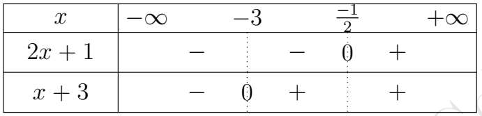
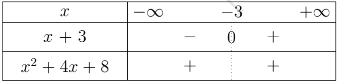
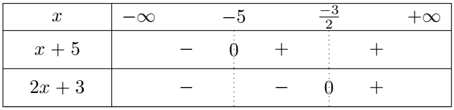

I. Équations
-
Compléments sur les trinômes du 2nd degré
-
Équation bicarrée et équation symétrique
-
Forme canonique d'un trinôme du second degré
Soit \( P(x)=ax^2+bx+c \) où $a,b,c\in\mathbb{R}$ avec $a\neq0$.
Alors \( P(x)=a\left[\left(x+\dfrac{b}{2a}\right)^2-\dfrac{\Delta}{4a^2}\right] \) où \( \Delta=b^2-4ac. \)
L’expression obtenue dans $(*)$ est appelée forme canonique du trinôme du $2^{\text{nd}}$ degré $P(x)$.
-
Théorème
Soit \( P(x)=ax^2+bx+c \) où $a,b,c\in\mathbb{R}$ avec $a\neq0$.
\( \Delta=b^2-4ac \)
-
Si $\Delta<0$ alors $P$ n’admet pas de racine.
-
Si $\Delta>0$ alors $P$ admet deux racines distinctes $x_1$ et $x_2$ telles que :
\( x_1=\dfrac{-b-\sqrt{\Delta}}{2a} \quad \text{et} \quad x_2=\dfrac{-b+\sqrt{\Delta}}{2a}. \)
-
Si $\Delta=0$ alors $P$ admet une racine double $x_0$ telle que :
\( x_0=\dfrac{-b}{2a}. \)
-
-
Factorisation de $P(x)$
Soit $P(x)=ax^2+bx+c$, $a,b,c\in\mathbb{R}$ avec $a\neq0$.
-
Si $\Delta<0$ alors $P(x)$ n’a pas de factorisation dans $\mathbb{R}$.
-
Si $\Delta>0$ alors $P(x)$ est factorisable telle que :
\( \boxed{P(x)=a(x-x_1)(x-x_2)} \)
-
Si $\Delta=0$ alors $P(x)$ est factorisable telle que :
\( \boxed{P(x)=a(x-x_0)^2} \)
-
-
-
Équation bicarrée et équation symétrique
-
Équation bicarrée
$3x^{4}-4x^{2}+1=0\quad$ (1)
Posons $X=x^{2}$, donc l'équation (1) devient $3X^{2}-4X+1=0\quad$ (2).
Résolvons l'équation (2). On a :
$ \begin{array}{rcl} \Delta=16-12=4 & \Rightarrow & X_{1}=\dfrac{4-2}{6}=\dfrac{1}{3}\quad\text{ et }\quad X_{2}=\dfrac{4+2}{6}=1 \\ \\ & \Rightarrow & X_{1}=\dfrac{1}{3}=x^{2}\quad \text{ et }\quad X_{2}=1=x^{2} \\ \\ & \Rightarrow & \left\lbrace\begin{array}{lll} x_{1}=\dfrac{\sqrt{3}}{3}\quad \text{ ou }\quad x_{1}=-\dfrac{\sqrt{3}}{3}\\ \\ x_{2}=1\quad \text{ ou }\quad x_{2}=-1 \end{array}\right. \end{array} $
-
-
Équation paramétrique
-
-
Équations irrationnelles
-
Équations du type $\sqrt{f(x)} = \sqrt{g(x)}$
\( \sqrt{x^{2}+3x-1} = \sqrt{x+2} \) est une équation irrationnelle du type \( \sqrt{f(x)} = \sqrt{g(x)} \) avec :
$f(x) = x^{2}+3x-1 \quad \text{et} \quad g(x) = x+2$.
Pour résoudre une équation du type \( \sqrt{f(x)} = \sqrt{g(x)} \), on peut utiliser deux méthodes :
Méthode de Résolution
-
1ère étape : Simplification de : $\sqrt{ f(x)} = \sqrt{ g(x)} \Leftrightarrow \begin{cases} f(x) \geq 0 \\[3mm] g(x) \geq 0 \\[3mm] f(x) = g(x) \end{cases}$
On a les équivalences suivantes :
$\sqrt{ f(x)} = \sqrt{ g(x)} \Leftrightarrow \begin{cases} f(x) \geq 0 \\[3mm] g(x) \geq 0 \\[3mm] f(x) = g(x) \end{cases}$
Explication :
Pour que les deux racines soient définies et égales, il faut que \( f(x) \) et \( g(x) \) soient toutes deux positives, d'où les conditions \( f(x) \geq 0 \) et \( g(x) \geq 0 \).
Ensuite, il faut que les deux expressions soient égales, soit \( f(x) = g(x) \).
En simplifiant ces conditions, on obtient :
\( \Leftrightarrow \begin{cases} g(x) \geq 0 \\ f(x) = g(x) \end{cases} \)
Explication :
Ici, on peut réduire les conditions en ne gardant que \( g(x) \geq 0 \), car l'égalité \( f(x) = g(x) \) implique automatiquement que \( f(x) \geq 0 \) lorsque \( g(x) \geq 0 \).
Finalement, cela se résume à :
$\Leftrightarrow \begin{cases} f(x) \geq 0 \\ f(x) = g(x) \end{cases}$
Explication :
Cette équivalence montre que, pour que l'équation soit valide, il faut vérifier que \( f(x) \geq 0 \), tout en résolvant l'équation \( f(x) = g(x) \).
-
2ème étape : Résolution de l'équation
On résout l'équation en élevant au carré les des membres de l'équation
Exemple 1
Résoudre l'équations :
\(\sqrt{2x+1}=\sqrt{x+3}\)
-
Étape 1 : Conditions de validité \(D_v\)
Pour que les racines carrées existent, il faut que les expressions à l'intérieur des racines soient positives ou nulles :
\(2x + 1 \geq 0 \implies x \geq -\frac{1}{2}\)
\(x + 3 \geq 0 \implies x \geq -3\)
Donc, la condition de validité est :
\(D_v = \left[-\frac{1}{2}; +\infty \right[\)
-
Étape 2 : Résolution de l'équation
On élève les deux membres de l'équation au carré :
\((\sqrt{2x + 1})^2 = (\sqrt{x + 3})^2\)
Ce qui donne :
\(2x + 1 = x + 3\)
-
Étape 3 : Simplification de l'équation
Isolons \(x\) :
\(2x + 1 = x + 3\)
\(2x - x = 3 - 1\)
\(x = 2\)
-
Étape 4 : Vérification de la solution
Vérifions que \(x = 2\) appartient bien à l'ensemble de validité \(D_v\) :
-
\(x = 2\) est bien dans \(\left[-\frac{1}{2}; +\infty \right[\).
-
Vérification dans l'équation initiale :
\(\sqrt{2 \times 2 + 1} = \sqrt{2 + 3}\)
\(\sqrt{5} = \sqrt{5}\)
La solution est donc correcte.
-
-
Conclusion : La solution de l'équation est \(x = 2\).
Exemple 2
Résoudre l'équations :
$\sqrt{x^2 + 3x - 1} = \sqrt{x + 2}$
-
Étape 1 : Conditions de validité $D_v$
On doit vérifier que \( f(x) = x^2 + 3x - 1 \geq 0 \) et \( g(x) = x + 2 \geq 0 \).
La deuxième condition nous donne \( x \geq -2 \).
-
Étape 2 : Résolution de l'équation
Élevons les deux membres de l'équation au carré :
$x^2 + 3x - 1 = x + 2$
Cela revient à résoudre l'équation :
$x^2 + 3x - 1 = x + 2 \quad \Leftrightarrow \quad x^2 + 2x - 3 = 0$
-
Étape 3 : Résolution de l'équation quadratique
On résout \( x^2 + 2x - 3 = 0 \) par factorisation :
$(x - 1)(x + 3) = 0 \quad \Rightarrow \quad x = 1 \quad \text{ou} \quad x = -3$
-
Étape 4 : Vérification des solutions
-
Pour \( x = 1 \) :
$f(1) = 1^2 + 3(1) - 1 = 3 \quad \text{et} \quad g(1) = 1 + 2 = 3$
Les deux fonctions sont positives et égales, donc \( x = 1 \) est une solution.
-
Pour \( x = -3 \) :
$f(-3) = (-3)^2 + 3(-3) - 1 = 9 - 9 - 1 = -1 \quad \text{et} \quad g(-3) = -3 + 2 = -1$
Les deux fonctions sont négatives, donc \( x = -3 \) n'est pas une solution.
Conclusion :La seule solution est \( x = 1 \).
-
-
-
Équations du type $\sqrt{f(x)} = ax + b$
Méthode de Résolution
-
1ère étape : Vérification des conditions de validité.
On a les équivalences suivantes :
$\sqrt{f(x)} = g(x) \Leftrightarrow \begin{cases} f(x) \geq 0 \\[3mm] g(x) \geq 0 \\[3mm] f(x) = g(x)^{2} \end{cases}$
Explication :
-
\( f(x) \geq 0 \) : Pour que la racine carrée \( \sqrt{f(x)} \) soit définie, il est nécessaire que l'expression sous la racine soit positive ou nulle, d'où \( f(x) \geq 0 \).
-
\( g(x) \geq 0 \) : Comme la racine carrée d'un nombre est toujours positive, il faut également que \( g(x) \), qui représente l'autre membre de l'équation, soit positif ou nul.
-
\( f(x) = g(x)^2 \) : Une fois ces conditions vérifiées, on élève les deux membres de l'équation au carré afin d'éliminer la racine carrée, ce qui donne \( f(x) = g(x)^2 \).
En simplifiant, on obtient :
$\Leftrightarrow \begin{cases} g(x) \geq 0 \\ f(x) = g(x)^{2} \end{cases}$
Explication :
Dans certains cas, la condition \( f(x) \geq 0 \) devient redondante, car l'égalité \( f(x) = g(x)^2 \) implique que \( f(x) \) est nécessairement positive si \( g(x) \geq 0 \).
-
Exemple 3
Résoudre l'équation:
\( \sqrt{2x^{2}+4x-6} = 2x - 1 \)
-
Étape 1 : Conditions de validité $D_v$
$2x-1\geq 0 \Longleftrightarrow x\geq \dfrac{1}{2}.$
Donc $\displaystyle D_v=\left[\dfrac{1}{2};+\infty\right[$
-
Étape 2 : Résolution de l'équation
$\begin{aligned} 2x^{2}+4x-6&=(2x-1)^2\\ 2x^{2}+4x-6&=4x^{2}-4x+1\\ 2x^{2}-8x+7&=0. \end{aligned}$
$ \begin{aligned} \Delta &=(-8)^2-4(2)(7)\\ &=64-56\\ &=8 \end{aligned} $
$\begin{aligned} x_1&=\frac{8-\sqrt{8}}{4} =\frac{8-2\sqrt{2}}{4} =2-\frac{\sqrt{2}}{2},\\[2mm] x_2&=\frac{8+\sqrt{8}}{4} =\frac{8+2\sqrt{2}}{4} =2+\frac{\sqrt{2}}{2}. \end{aligned}$
-
Étape 3 : Vérification de l'appartenance de des solution dans $D_v$
$x_1 \in D_v$ et $x_2 \in D_v$
$\boxed{ S= \left\{ 2-\frac{\sqrt{2}}{2}\,;\, 2+\frac{\sqrt{2}}{2} \right\} }$
-
-
Exercice D'application 1
Résoudre les équations
- \( \sqrt{x^{2}+3x-1} = x+2 \)
- \( \sqrt{x^{2}-6x}=\sqrt{x-6} \)
II. Inéquations irrationnelles
-
Inéquations du type $\sqrt{f(x)} \le ax + b$
Méthode de Résolution
On a les équivalences suivantes :
$\displaystyle \sqrt{f(x)} \leq g(x) \Leftrightarrow \begin{cases} f(x) \geq 0 \\[3mm] g(x) \geq 0 \\[3mm] f(x) \leq g(x)^{2} \end{cases}$
-
Explication :
-
\( f(x) \geq 0 \) : L'expression sous la racine carrée doit être positive ou nulle pour que la racine soit définie.
-
\( g(x) \geq 0 \) : Comme la racine carrée est toujours positive ou nulle, il est nécessaire que l'expression \( g(x) \), ici \( ax + b \), soit aussi positive ou nulle.
-
\( f(x) \leq g(x)^2 \) : On élève les deux membres de l'inéquation au carré pour éliminer la racine, ce qui donne l'inéquation \( f(x) \leq g(x)^2 \).
-
Exemple 4
Résoudre l'inéquation :
\( \sqrt{2x+1} \leq x+3 \).
-
Étape 1 : Conditions de validité \(D_v\)
L'inéquation est définie si \( 2x + 1 \geq 0 \) et \( x + 3 \geq 0 \).
$ \begin{aligned} \begin{cases} 2x + 1 \geq 0\\[3mm] x + 3 \geq 0 \end{cases} &\implies \begin{cases} x \geq -\dfrac{1}{2}\\[3mm] x \geq -3 \end{cases}\\ &\implies \begin{cases} x \geq -\dfrac{1}{2}\\[3mm] x \geq -3 \end{cases}\\ &\implies \begin{cases} \left[-\dfrac{1}{2}; +\infty \right[\\[3mm] \left[-3; +\infty \right[ \end{cases} \end{aligned} $
$D_v=\left[-\dfrac{1}{2}; +\infty \right[ \cap \left[-3; +\infty \right[$ -
Étape 2 : Résolution de l'inéquation
On élève les deux membres de l'inéquation au carré :
$ \begin{aligned} 2x + 1 \leq (x + 3)^2 \quad &\Leftrightarrow \quad 2x + 1 \leq x^2 + 6x + 9\\ \quad &\Leftrightarrow \quad x^2 + 4x + 8 \geq 0 \end{aligned} $Posons $x^2+4x+8=0$
$\Delta=16-32=-16$
Comme $\Delta<0,$ donc le signe de $x^2+4x+8$ du signe 1 qui est positif donc \( \mathbb{R} \)
-
Étape 3 : Conclusion
$ \begin{aligned} S&=D_v \cap \mathbb{R}\\ &=\left[-3; +\infty \right[ \cap \mathbb{R}\\ &=\left[-3; +\infty \right[ \end{aligned} $
$\boxed{ S=\left[-3; +\infty \right[}$
-
-
Inéquations du type $\sqrt{f(x)} \ge ax + b$
Méthode de Résolution
On a les équivalences suivantes :
$\begin{aligned} \sqrt{f(x)} \geq g(x) &\Leftrightarrow \begin{cases} f(x) \geq 0\\[3mm] g(x) \geq 0\\[3mm] f(x) \geq g(x)^2 \end{cases} \quad \textbf{ou} \quad \begin{cases} f(x) \geq 0\\[3mm] g(x) \leq 0 \end{cases}\\ &\Leftrightarrow \boxed{ \begin{cases} g(x) \geq 0\\[3mm] f(x) \geq g(x)^2 \end{cases} \quad \textbf{ou} \quad \begin{cases} f(x) \geq 0\\[3mm] g(x) \leq 0 \end{cases}} \end{aligned}$
Explication :
-
\( f(x) \geq 0 \) : Comme la racine carrée\( \sqrt{f(x)} \) doit être définie, il est nécessaire que l'expression sous la racine soit positive ou nulle.
-
Premier cas : \( g(x) \geq 0 \) :Les deux membres sont alors positifs ou nuls. On peut donc élever les deux membres au carré sans changer le sens de l'inégalité :
$\sqrt{f(x)} \geq g(x) \Leftrightarrow f(x) \geq g(x)^2.$
-
Deuxième cas : \( g(x) \leq 0 \) :Comme une racine carrée est toujours positive ou nulle, on a automatiquement
$\sqrt{f(x)} \geq 0 \geq g(x)$
Ainsi, dans ce cas, il suffit d'avoir $f(x) \geq 0.$
En simplifiant, on obtient :
$\boxed{ \sqrt{f(x)} \geq g(x) \Leftrightarrow \left[ \begin{array}{l} g(x)\geq0\\ f(x)\geq g(x)^2 \end{array} \right] \quad\textbf{ou}\quad \left[ \begin{array}{l} f(x)\geq0\\ g(x)\leq0 \end{array} \right] }$
Dans le cas particulier où \(g(x)=ax+b\), on résout donc séparément les deux systèmes :
$\begin{cases} f(x)\geq0\\ ax+b\leq0 \end{cases}$ et $\begin{cases} ax+b\geq0\\ f(x)\geq(ax+b)^2. \end{cases}$
L'ensemble solution de l'inéquation est l'union des solutions de ces deux systèmes.
Exemple 5
Résoudre l'inéquation:
$\sqrt{2x+1}\geq x+3$
-
Étape 1 :
L'inéquation est définie ssi $ \sqrt{2x+1}\geq x+3 \Leftrightarrow \left[ \begin{array}{l} 2x+1 \geq 0\\[3mm] x+3 \leq 0 \end{array} \right] \quad\textbf{ou}\quad \left[ \begin{array}{l} x+3 \geq 0\\[3mm] 2x+1\geq (x+3)^2 \end{array} \right] $
-
Étape 2 : Résolution de l'équation
\[ S_{1}: \begin{cases} 2x + 1 \geq 0 \\[3mm] x + 3 \leq 0 \end{cases} \textbf{ et } S_{2}: \begin{cases} x + 3 \geq 0 \\[3mm] x^2 + 4x + 8 \leq 0 \end{cases} \]
\[ \textbf{Posons } S_{1}: \begin{cases} 2x + 1 = 0 \\ \\ x + 3 = 0 \end{cases}\qquad \textbf{Posons } S_{2}: \begin{cases} x + 3 = 0 \\[3mm] x^2 + 4x + 8 = 0 \end{cases} \]
-
Pour $S_{1}:$
$S_{1}: \begin{cases} x = \dfrac{-1}{2} \\ x = -3 \end{cases} $

$S_1 = \varnothing$
-
Pour $S_{2}: \begin{cases} x + 3 = 0 \\[3mm] x^2 + 4x + 8 = 0 \end{cases}$
$ \begin{cases} x + 3 = 0 \\[3mm] x^2 + 4x + 8 = 0 \end{cases} \implies \begin{cases} x = -3 \\[3mm] \text{Pas de Racine } \end{cases} $

$S_2 = \varnothing$
$ \begin{aligned} S &= S_1 \cup S_2\\ &= \varnothing \cup \varnothing \end{aligned} $
$\boxed{S=\varnothing}$
-
-
-
Inéquations du type $\sqrt{f(x)} \le \sqrt{g(x)}$
Méthode de Résolution
On a : $ \sqrt{f(x)}\leq\sqrt{g(x)}\;\Leftrightarrow \begin{cases} f(x) \geq 0\\[3mm] g(x)\geq 0\\[3mm] f(x)\leq g(x) \end{cases}$
Exemple 6
Résoudre l'inéquation:
$\sqrt{2x+3}\leq\sqrt{x+5}$
-
Étape 1 : Conditions de validité $D_v$
L'inéquation n'a de sense que ssi $ \begin{cases} 2x+3\geq0 \\[3mm] x+5\geq0 \end{cases} $
$ \textbf{Posons } S_{1}:\begin{cases} 2x+3 = 0 \\[3mm] x+5 = 0 \end{cases} $
Pour $S_{1}:$
$S_{1}: \begin{cases} x = \dfrac{-3}{2} \\[3mm] x = -5 \end{cases} $

\( D_v=\left[-\frac{3}{2},+\infty\right[. \)
-
Étape 2 : Résolution de l'équation
Sur \(D\), on peut comparer directement les radicandes : \( \sqrt{2x+3}\leq\sqrt{x+5} \Longleftrightarrow 2x+3\leq x+5. \)
Donc : $ x\leq2 \implies S=]-\infty,2]$
$ \begin{aligned} S &= D_v \cap S\\ &= \left[-\frac{3}{2},+\infty\right[ \cap ]-\infty,2] \end{aligned} $
$\boxed{S=\left[-\frac{3}{2},2\right]}$
-
Exercice D'application 3
Résoudre dans $\mathbb{R}$
- \( \sqrt{x^{2}-4x}\leq\sqrt{x+7} \)
- \( \sqrt{x+3} \leq 5 \)
- \( \sqrt{-2x+1} \geq -3 \)
- \( \sqrt{x+3} \leq \sqrt{-2x+4} \)
- \( \sqrt{x^{2}-4} \leq x+1 \)
- \( \sqrt{x^{2}+2x -3} \leq x-2 \)
- \( \sqrt{x^{2}+3x-1} \leq x+2 \)
III. Systèmes
-
Systèmes de 3 équations linéaires à trois inconnues
-
Exemples et systèmes triangulaires
Le système $\begin{cases} a_1x + b_1y + c_1z = d_1 \\[3mm] a_2x + b_2y + c_2z = d_2 \\[3mm] a_3x + b_3y + c_3z = d_3 \end{cases}$
est formé de trois équations. Chacune d’elle contient trois inconnues \(x\), \(y\) et \(z\) avec des exposants tous égaux à 1. On dit qu’on a un système de trois équations linéaires à trois inconnues \(x\), \(y\) et \(z\).
Résoudre un tel système c’est trouver tous les triplets \((x, y, z)\) de nombres réels qui vérifient les trois équations du système.
Exemple de système :
$\begin{cases} 2x + y - z = 3 \\[3mm] x - 2y + 3z = -4 \\[3mm] 3x + y + 2z = 7 \end{cases}$
Exemple de système triangulaire
Un système triangulaire supérieur est un système d'équations où chaque équation contient une inconnue de moins que la précédente, formant un triangle.
$ \left\{ \begin{array}{rcc l} 2x + 3y - z & = & 5 & (L_1) \\[2mm] y + 4z & = & -2 & (L_2) \\[2mm] y + z & = & 3 & (L_3) \end{array} \right. $
Dans ce système, la dernière équation contient seulement \( z \), ce qui permet de le résoudre directement, puis de remonter en substituant dans les équations précédentes pour obtenir \( y \) et \( x \).
-
Méthode du pivot de Gauss
Exemple 7
Résolvons dans $\mathbb{R}^3$ le système suivant par la méthode du pivot de Gauss :
$(S) : \begin{cases} x + 10y - 3z = 5 & (L_1) \\[3mm] 2x - y + 2z = 2 & (L_2) \\[3mm] -x + y + z = -3 & (L_3) \end{cases}$
Méthode de résolution pas à pas :
-
Étape 1 : Élimination de $x$ dans $(L_2)$
On garde la ligne pivot $(L_1)$ et on remplace $(L_2)$ par $L_2 - 2L_1$ :
$\begin{array}{rcc l} L_2 : & 2x - y + 2z & = & 2 \\ -2L_1 : & -2x - 20y + 6z & = & -10 \\ \hline L'_2 : & -21y + 8z & = & -8 \end{array}$
-
Étape 2 : Élimination de $x$ dans $(L_3)$
On conserve $(L_1)$ et on remplace $(L_3)$ par $L_3 + L_1$ :
$\begin{array}{rcc l} L_3 : & -x + y + z & = & -3 \\ + L_1 : & x + 10y - 3z & = & 5 \\ \hline L'_3 : & 11y - 2z & = & 2 \end{array}$
À ce stade, on obtient le système équivalent réduit :
$ \left\{ \begin{array}{rcc l} x + 10y - 3z &=& 5 & (L_1) \\ -21y + 8z &=& -8 & (L'_2) \\ 11y - 2z &=& 2 & (L'_3) \end{array} \right. $
-
Étape 3 : Élimination de $y$ dans $(L'_3)$
On fixe la ligne $(L'_2)$ comme nouveau pivot et on élimine $y$ en remplaçant $(L'_3)$ par $21L'_3 + 11L'_2$ :
$\begin{array}{rcc l} 21L'_3 : & 231y - 42z & = & 42 \\ + 11L'_2 : & -231y + 88z & = & -88 \\ \hline L''_3 : & 46z & = & -46 \end{array}$
On obtient alors le système triangulaire équivalent :
$ \left\{ \begin{array}{rcc l} x + 10y - 3z & = & 5 & (L_1) \\ -21y + 8z & = & -8 & (L'_2) \\ 46z & = & -46 & (L''_3) \end{array} \right.$
-
Étape 4 : Remontée (détermination des inconnues)
-
D'après $(L''_3)$ : $46z = -46 \implies z = -1$
-
En remplaçant $z$ dans $(L'_2)$ :
$-21y + 8(-1) = -8 \implies -21y - 8 = -8 \implies -21y = 0 \implies y = 0$
-
En remplaçant $y$ et $z$ dans $(L_1)$ :
$x + 10(0) - 3(-1) = 5 \implies x + 3 = 5 \implies x = 2$
-
-
-